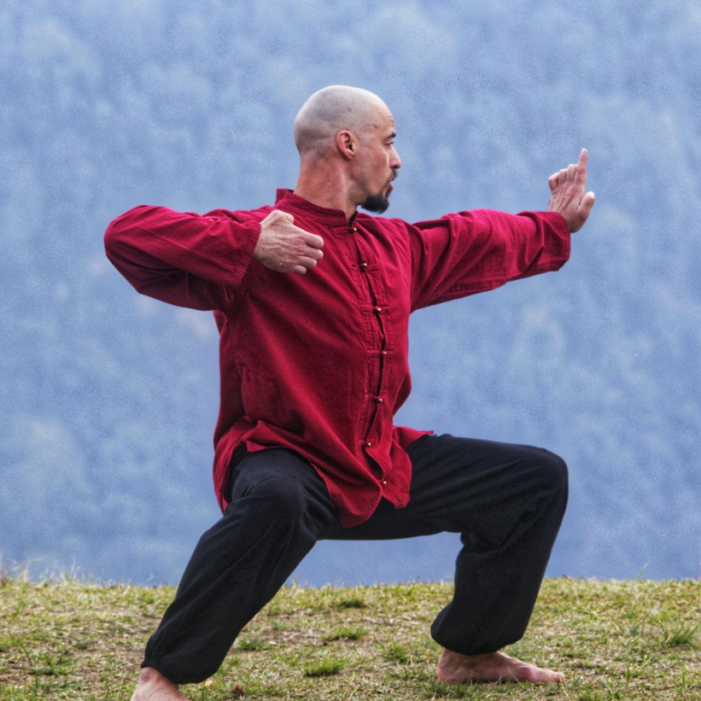

i. Базовый
Онлайн
XX 900 ₽
или от X XXX ₽/мес в рассрочку
- 30 онлайн-занятий
- Записи в доступе
- Чат потока
Ранняя бронь — после заявки
ЗаписатьсяАвторский курс Ильи Баринова
Йога для начинающих и практикующих. Система, которую вы встраиваете в свою жизнь, — чтобы менялось её качество, а не только то, что происходит на коврике.

— Слово автора
Илья — о системе курса: как адаптировать практику под себя и встроить её в обычную жизнь, чтобы росло её качество.
Практика начинает работать тогда,— Точка опоры
когда выходит за пределы коврика — в жизнь.
I / Аудитория
Курс собран и для тех, кто хочет войти в практику грамотно, и для тех, кто уже занимается, но хочет, чтобы практика наконец давала результат и работала в жизни.
— Если вы начинаете с нуля
— Если вы уже практикуете
II / Контекст
Многие занимаются месяцами и упираются в одно и то же: повторяют движения, но не видят цепочку целиком — что именно делают в асане, зачем и каким образом, и как это потом отражается на теле, состоянии и качестве жизни.
Поэтому фокус курса не столько на том, как практика работает, сколько на том, зачем она нужна и как потом проявляется — в теле, состоянии, действиях и поведении.
III / Опора
Каждая опора — отдельный слой практики. Вместе они дают систему, которую каждый адаптирует под себя и встраивает в повседневность, меняя её качество.


— Запросы
Это типичные формулировки тех, кто оставляет заявку. Если узнаёте себя — курс собран в том числе для вас.
IV / Программа
Шесть модулей — от теории и безопасности к самостоятельной практике и ретриту.
— Ретрит
Три-пять дней живой практики на природе. Без сцены, без суеты — только тело, дыхание, тишина.
Поездка — по желанию. Маршрут полноценен и без неё.

V / Результат
Главный итог — не набор упражнений, а более ясное понимание практики и собственного тела.
Первые изменения большинство участников замечают в первые 2–3 недели практики.

— О курсе
«Точка опоры» — курс для тех, кто хочет начать заниматься грамотно или, уже практикуя, добиться, чтобы практика наконец работала для них и в их жизни.
Это не архив уроков и не разовый интенсив, а маршрут, в котором человек постепенно выстраивает опору в теле, состоянии и повседневной жизни — и её качество растёт.

— Формат
Живой процесс, а не архив видео. Участники проходят путь в одном ритме — с вопросами, разбором и ощущением прогресса.
На курсе важны регулярность, группа, поддержка и общий ритм — так проще не бросить и легче увидеть собственный прогресс.


VI / Автор
Илья Баринов — мастер телесных практик с 20-летним стажем.

Видео-приветствие автора — скоро
Также у Ильи · курс по цигуну— Отзывы
Курс стартует первым потоком — отзывы участников появятся здесь после старта.
Отзывы о практике с Ильёй можно посмотреть на сайте школы — barinovdao.ru.
VII / Участие
Точная стоимость и условия ранней брони — после заявки.
i. Базовый
XX 900 ₽
или от X XXX ₽/мес в рассрочку
Ранняя бронь — после заявки
Записатьсяii. Глубина
XX 900 ₽
или от X XXX ₽/мес в рассрочку
Ранняя бронь — после заявки
Записатьсяiii. Максимум
от XX 900 ₽
или от X XXX ₽/мес в рассрочку
Условия ретрита — отдельно
ОбсудитьОплата российскими и зарубежными картами. Рассрочка 3–12 мес.
— Ранняя регистрация
Для тех, кто оставит заявку сейчас, фиксируется минимальная стоимость участия. Если курс вам интересен, лучше оставить заявку заранее — до официального старта продаж.
Ранняя цена действует до 1 сентября.
Оставить заявкуПосле заявки пришлём подробности о старте, формате и условиях участия.
— Вопросы
Да. Курс рассчитан в том числе на тех, кто только начинает и хочет войти в практику спокойно и грамотно.
Да. Курс подойдёт тем, кто уже занимается, но хочет, чтобы практика работала и давала результат в жизни, и получить более ясную систему.
Нет. Курс помогает начать с текущего состояния тела и постепенно развивать подвижность без перегруза.
Курс строится с вниманием к безопасности. При выраженных ограничениях важно учитывать индивидуальные особенности и при необходимости ориентироваться на рекомендации врача.
Да, записи занятий будут доступны участникам. Сроки доступа зависят от тарифа — подробности пришлём после заявки.
Да. Основная часть курса проходит онлайн. Условия участия в ретрите можно обсудить отдельно.
Курс рассчитан на регулярное участие в течение трёх месяцев. Точный ритм занятий будет сообщён перед стартом.
VIII / Заявка
Если вы давно хотели начать заниматься йогой — или уже практикуете, но хотите, чтобы практика стала опорой в вашей жизни, — этот курс даст вам понятную базу и систему, которую вы адаптируете под себя. Без спешки. Без лишней эзотерики. Без механического повторения формы.
Мы свяжемся с вами и пришлём подробности курса. Срочно — Telegram.